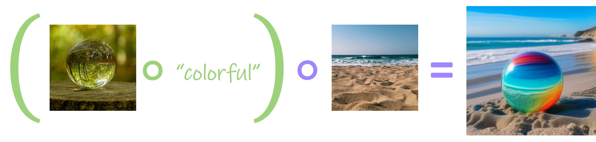

Generative Equations

Generative Trees
How Does it Work?

- We represent each operator as a fine-tuned diffusion prior model with is conditioned on image embeddings corresponding to our operator inputs.
- Training is achieved via a dedicated dataset representing the semantic operation with an optional textual clip loss.
- The sampled image embedding is then passed to an image-conditioned diffusion model to generate the final result.
Operator Results
Texturing Operator
Given an image embedding of an object and an image embedding of a texture exemplar, paint the object with the provided texture.
Union Operator
Given two image embeddings representing scenes with one or multiple objects, combine the objects appearing in the scenes into a single embedding composed of both objects.
Instruct Operator
Given an image embedding of an object and a single-word adjective, apply the adjective to the image embedding, altering its characteristics accordingly.
Scene Operator
Given an image embedding of an object and an image embedding representing a scene layout, generate an image placing the object within a semantically similar scene.
Anything Else?
Sampling with Partial Inputs
Given only an object or a texture, the pOps texturing operator can successfully sample diverse textured objects when starting from different seeds.

Bring your Own Renderer
The image embeddings generated by pOps can be fed into different image-conditioned diffusion models, such as Kandinsky or SDXL w/ IP-Adapter. By feeding our embeddings to IP-Adapater we can also incoporate spatial conditions via pretrained ControlNets.